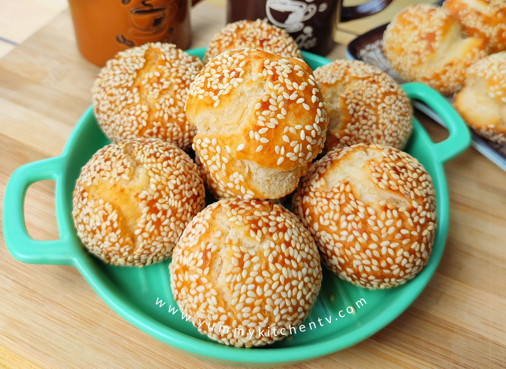

Binangkal Recipe
Home

Description
Binangkal are deep-fried Filipino
sesame-coated dough balls, crunchy on the outside
and soft inside, perfect for snacks or merienda.
Ingredients
- 2 cups all-purpose flour
- 1/2 cup granulated sugar.
- 1 tablespoon baking powder
Steps
- Prepare Dry Ingredients: In a large bowl,
whisk together flour, sugar, baking powder, and salt until evenly combined.
- Mix Wet Ingredients: In a separate bowl, beat the egg, then add evaporated milk,
vegetable oil, and vanilla extract. Mix until smooth.
- Form the Dough: Gradually add the wet mixture to the dry ingredients,
stirring until a soft, slightly sticky dough forms. Avoid overmixing.
- Shape and Coat: Lightly oil your hands and roll portions of dough into small balls
(about 1 to 1.5 inches in diameter). Roll each ball in sesame seeds until fully coated.
- Heat Oil
- Deep Fry
- Drain